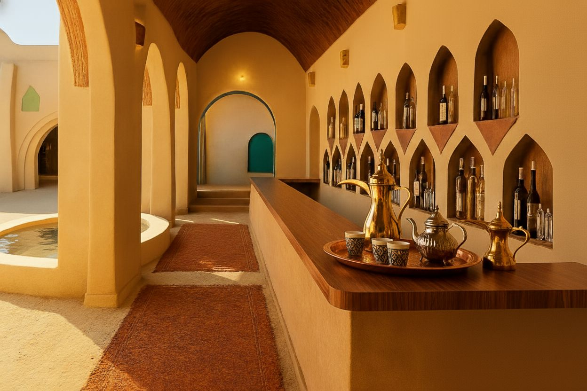
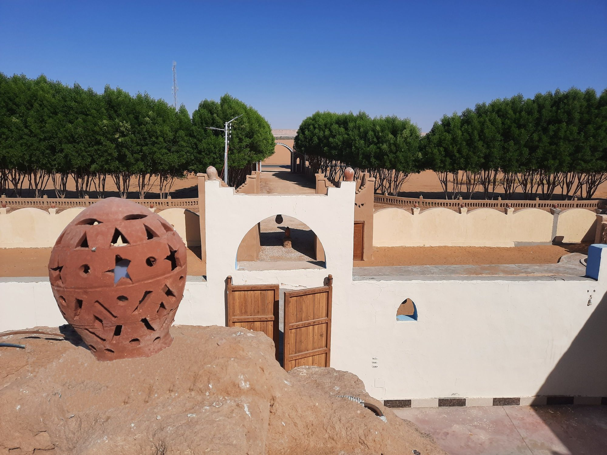
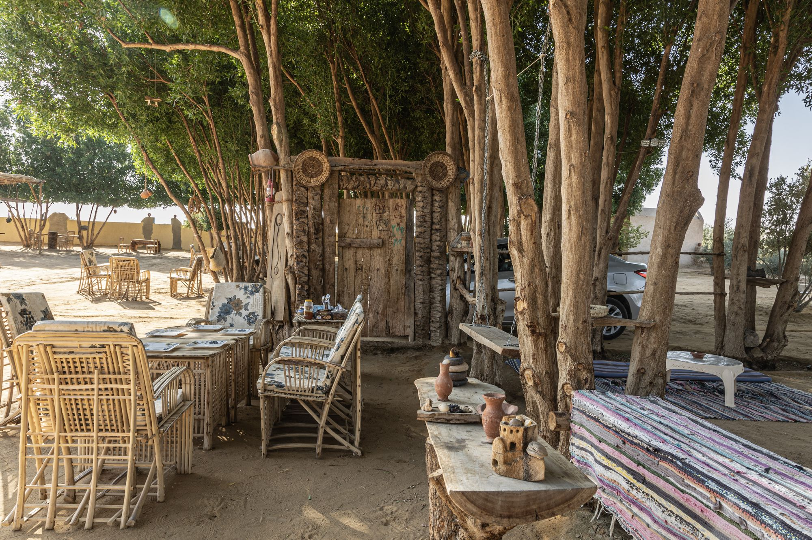
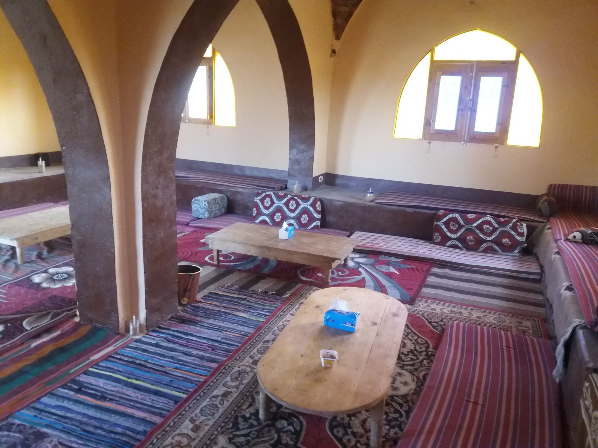

¡Bienvenidos!¡Marhaba!
Sand Gate Camp está en el pequeño oasis de Abu Monkar, en el extremo occidental del Desierto Líbico: un caravasar de tierra y madera de palmera, pensado para descansar entre los oasis y las dunas.
Un caravasarpara viajeros de hoy.
La construcción empezó en 2009, con los métodos tradicionales de los oasis. El campamento ocupa una parcela de 5.000 m² rodeada de unas 80 hectáreas de palmerales y árboles frutales.
Su distribución sigue la de los antiguos caravasares que acogían a los viajeros en las rutas del desierto: estancias alrededor de patios en sombra, gruesos muros de tierra que frenan el calor y terrazas abiertas al horizonte. Materiales locales y un interior cálido y minimalista.
Es nuestra base para atravesar el desierto: el lugar donde las expediciones descansan, se reorganizan y vuelven a salir hacia el Gran Mar de Arena.
Espacios queguardan la sombra.
Cada rincón del campamento está hecho al ritmo del desierto: fresco a mediodía, abierto al atardecer y en silencio por la noche.

Habitaciones privadas
Habitaciones independientes pensadas para la intimidad, con vistas abiertas al paisaje. Noches tranquilas y frescas entre muros de tierra.

Cafetería acogedora
Conocida por su aroma a especias y café recién hecho. El punto de encuentro natural después de un día en las dunas.

Salón comedor
Platos beduinos junto a cocina internacional, en mesas largas donde los grupos acaban compartiendo historias.

Salas comunes
Espacios compartidos para reunirse o descansar, donde se hacen actividades de música, danza y yoga.

Terrazas panorámicas
Para ver salir y ponerse el sol, disfrutar de la brisa de la noche y de un cielo lleno de estrellas.
Jardinesy patios.
Palmeras, frutales y sombra: el oasis dentro del campamento.







Tu campamento basepara el Gran Mar de Arena.
Nuestras dos grandes travesías pasan aquí dos noches: la primera tras cruzar el borde del Mar de Arena y la segunda después de un día de descanso con paseos por el oasis y un baño en la fuente termal de Bir Mahmoud.
Para alojarte,escríbenos.
No hay reservas automáticas: cada expedición se prepara a medida. Cuéntanos fechas, número de viajeros y cómo te gusta viajar, y te respondemos personalmente con disponibilidad y presupuesto.
Atención para reservas de 08:00 a 20:00 (hora de Egipto). ¿Prefieres un formulario? Ir a contacto